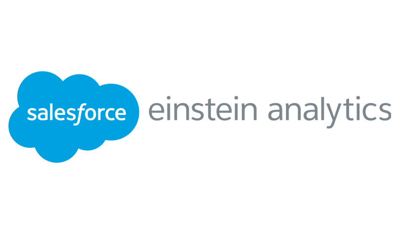
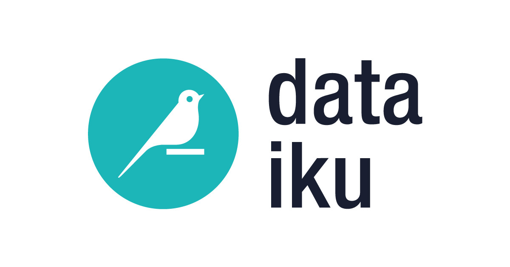

About me
Welcome to the Future of Product Management!
After some recent groundbeaking inovations from OpenAI we navigate to find the new norm of working. The role of a Product Manager continues to evolve, embracing not just the orchestration of great products but also the integration of advanced technologies like AI in redifining user exerperience. I I'm Mohit, an AI Product Manager. In my role, I focus 70% on strategic product management, 20% on hands-on development, and 10% on continuous learning, and I aim to craft solutions that meet the demands of our increasingly digital era.
The persona below embodies my professional identity and approach, designed to leverage my background in Data Science and Industrial Engineering. Here, you'll discover not just who I am, but how I think, design, and lead in the tech-driven world of today. Dive into my journey and see how I harness data and AI to drive decision-making and innovation across every project.
User
- Name: Mohit Dalal
- Role: AI Product Manager
Demographics
- Age: 28
- Education: Master’s in Data Science, Bachelor’s in Industrial and Production Engineering
- Industry: Tech, particularly AI and Industry 4.0
Professional Background:
- Role: 70% Product Management + 20% Development + 10% Learning
- Skills: Data analytics, AI application, software development, strategic planning, cross-functional team leadership
- Tools: Nvidia Omniverse, Python, SQL, JIRA, TensorFlow, Scikit-Learn, Git, Notion...
Navigating the AI Landscape: My Goals, Challenges, and Drive
-

Goals
- To lead the development and management of AI-driven products.
- To integrate AI not just in products but also in enhancing decision-making processes.
- To keep abreast of the latest technological advances and integrate them into business solutions.
-
Challenges
- The technical demands of AI integration with user-centric product development.
- Staying updated with rapid advancements in AI and machine learning technologies.
- Communicating complex AI concepts to stakeholders without technical backgrounds.
-
Motivations
- Passion for harnessing AI to solve real-world problems.
- Desire to be at the forefront of technological innovation in Industry 4.0.
- Enthusiasm for continuous learning and applying new technologies in product development.
-

Behavioral Traits
- Data-driven decision maker.
- Comfortable wearing multiple hats and juggling various responsibilities.
- Always learning and adapting to new technologies and methodologies.
"Integrating AI deeply into both the products I manage and the management process itself allows me to create solutions that are not only innovative but also incredibly efficient."
- Mohit Dalal
Resume
Education
-
Masters in Data Science
Rochester Institute of Technology, NY, USA August 2023 — May 2025- Focus: Advanced analytics, machine learning algorithms, data-driven product development and Explainable AI.
- Capstone Project: Collaborating with a manufacturing tech startup to develop a real-world application of machine learning techniques to optimize product features and user engagement.
-
Bachelor of Engineering - Industrial and Production Engineering
IIT, Delhi, India 2015 — 2019- Thesis: : "Automated Surveillance System" - Designed and built a motorized gun turret system capable of automated targeting and firing, showcasing innovation in hardware design and proficiency in integrating mechanical components with software controls.
Experience
-
Data Scientist, R&D (AI Product Manager)
Infinite Uptime, Pune, India 2022 — 2023Led Data Science team to build scalable machine learning solutions for predictive maintenance of critical industrial equipment.
- Led strategic development of predictive maintenance solutions, enhancing key clients’ machine efficiency and uptime by 40%.
- Built an end-to-end ML product to automatically classify the health of machines using vibration data from 10,000+ sensors.
- Developed Python utilities to automate data collection and report generation, managing the product lifecycle from concept to post-launch analysis to ensure alignment with user needs.
- Collaborated with condition monitoring experts, engineers, and data scientists to refine diagnostic system features using real-time data and predictive analytics insights.
- Designed and deployed low-code applications on Zoho to optimize business processes, adopted across the company and led to a reduction in process times by up to 35%. Conducted regular product reviews and iterations based on customer feedback, leading to a significant improvement in customer satisfaction and retention rates on Zoho.
- Onboarded 2 fresh graduates after interviewing 30+ candidates for an internship and Full-time position, trained them on domain knowledge, and mentored them in their data science careers.
-
Senior Data Scientist
Wolters Kluwer, Pune, India 2019 — 2022Built analytical solutions to help sales and marketing teams with a 360° view of the competitive landscape to win new prospects.
- Developed a marketing analytics platform that integrated data from multiple sources, including Eloqua and Salesforce, which improved lead qualification by 25% and increased sales conversions by 20%.
- Built an in-house pricing governance tool to streamline quote generation, provided training and support, and established processes to ensure its ongoing use, saving $1.2M annually by optimizing the process for a business unit.
- Led vendor evaluations and the implementation of DataIku, a data analytics tool, enhancing the speed of data pipeline construction and model deployment by 30%.
- Launched the tool in a phased manner and achieved an active user base of 50 sales reps (40% of the global sales team).
- Devised Python-based processes to seamlessly conduct implementation/transactional surveys, enabling extraction of insights derived from a comprehensive competitive study encompassing 150+ competitors.
Tech Stack
-

-

-

-

-

-

-

-

-

-

-

- 
-

- 